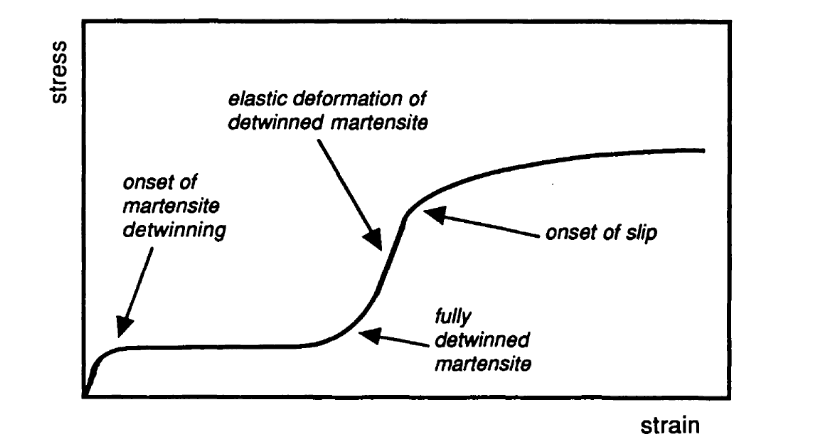
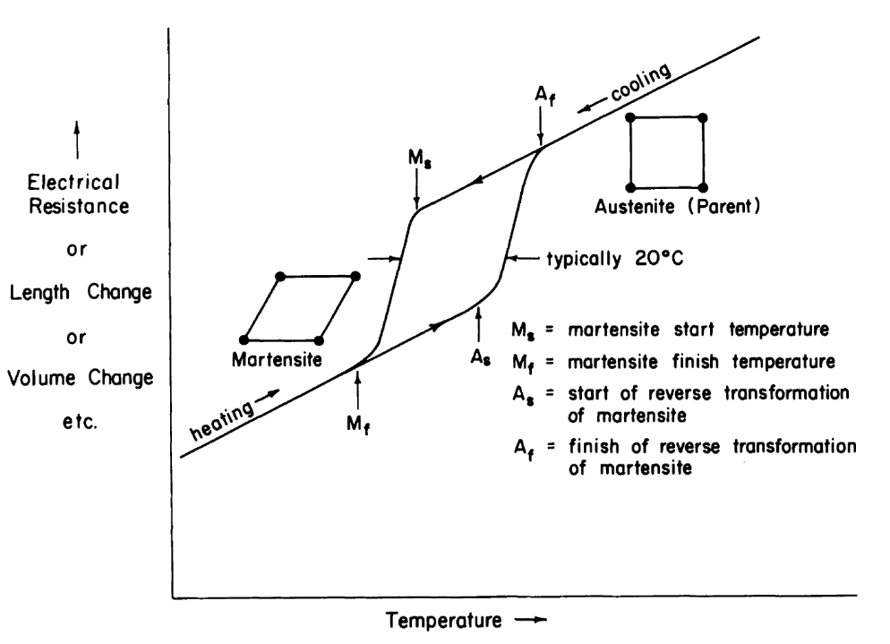
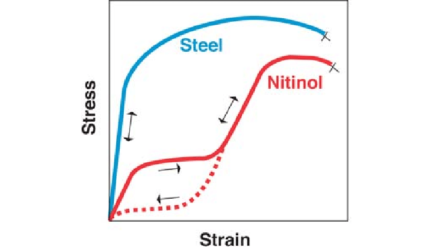

A shape-memory alloy is a type of smart material that reacts to heat and changes its shape. It can be
plastically deformedDeformed in such a way that the material stays
deformed, but it will "remember" its original shape, which will be restored if the
material is
heated above a certain temperature.[1]
The most common type of SMA is a Nickel-Titanium alloy known as
NiNickelTiTitaniumNOLNaval Ordanance
Laboratory.
It was first discovered
at
the
Naval Ordanance Laboratory in
1959 by William J Buehler and Frederick E Wang.[2]
When fabricating NiTiNOL, the ratio of Nickel to Titanium has a drastic effect on the transformation
temperature. Just a 1% increase in Nickel concentration equates to a change of ~100°C![3] The alloy is worked at temperatures of around 800°C and formed into the
right shape, after which point it is annealed at ~350°C to determine the original form. The
transformation temperatureThe temperature at which the SMA changes
structure can also be adjusted during this time.[3]
How do shape-memory alloys work?
Instructions:
Click and drag or swipe on the bar to deform it.
Press the heat button to heat up the bar.
Explanation:
The shape-memory effect is caused by the material alternating between two different structures.
Below the transformation temperatureThe temperature at which the SMA
changes structure, the structure is known as martensiteA
type of crystal structure which resembles a normal metal, which
in the
simulation has rhombus-shaped crystals. This is malleable, and can be plastically
deformedDeformed in such a way that the material stays deformed
with
only a little stress.
When the bar is heated above the transformation temperatureThe temperature
at which the SMA changes structure, the structure changes to a structure
called austeniteA type of crystal structure which behaves like a
spring, which has square crystals in the simulation. This makes the material
super-elasticWhen the material is bent, it returns to its original shape by
changing its crystal structure since this structure cannot be plastically
deformedDeformed in such a way that the material stays deformed,
causing the bar to spring back into the shape it was originally annealed in.
When the bar cools back down, the structure returns to martensiteA type of
crystal structure which resembles a normal metal, but the overall shape
doesn't
change.
Properties
Density:
6500 kg m-3[4]
Ultimate Tensile Stress:
8.6 GPa [4]
Young's Modulus:
~30GPa (martensiteA type of crystal structure which resembles a normal
metal) [4]
~80GPa (austeniteA type of crystal structure which behaves like a
spring) [4]

Typical stress-strain curve for a twinned martensitic material.[1]
Martensitic NiTiNOL has a very low yield stress, and can be plastically deformedDeformed in such a way that the material stays deformed with a small
amount of
force.[1] This is caused by the crystals changing which direction they point
in, as demonstrated by the simulation.[1]
This deformation is recoverable through
heating, but it does not allow the material to change volume.

Hypothetical plot of strain vs temperature for a martensitic transformation occuring in a
shape-memory alloy.[1]
Of course, with shape-memory alloys, stress is only half of the story. The material lengthens and contracts
when it changes between the martensiteA type of crystal structure which resembles a
normal metal and austeniteA type of crystal structure which
behaves like a spring structures, in addition to normal heat expansion.

Schematic stress-strain diagram for NiTiNOL and stainless steel.[5]
NiTiNOL behaves differently to other
metals due to its super-elasticityWhen the material is bent, it returns to its original
shape by
changing its crystal structure. The loading and unloading
curves form a hysteresis loop, allowing the material to elastically deform, similar to rubber and other
natural materials such as hair or bone.[5]
Medical Applications
NiTiNOL is well-suited to use inside the body, due to its elasticity as well as its resistance to kinks and
corrosion.[5]
The shape-memory effect means it is possible to make
self-expanding
stents. They can be collapsed, and inserted into blood vessels through tiny holes. Then they are heated to
expand and deploy to the correct size.[5]
Instructions
Click and drag or swipe to move the stent.
Push it against the top or bottom of the canvas to collapse it.
Drag it into the blood vessel to deploy - it will expand under the heat from the body.
Press the Rescue Stent button to (magically) retrieve the stent and try again.
Despite this unique behaviour, NiTiNOL is more expensive to produce than other metal stents, so many patients
may opt for a cheaper, more conventional design.
Industrial Applications
SMAs have also been used to make actuatorsA mechanical component which can be
controlled to change length or apply force, utilising the ability to change length when
heated by an
electrical current.[6] Similarly, they can be used in temperature sensors, by
deforming at the specific transformation temperatureThe temperature at which the
SMA changes structure and completing a circuit.[6]
Mechanisms involving shape-memory alloys tend to be simpler, with fewer moving parts, and also lighter than
conventional mechanisms. However, they lack the same longevity and reliability after heavy use, as the
material degrades as it is repeatedly heated, cooled and deformed.[6] As it
wears out,
it may become less flexible, or fail to return to its precise original shape, making it less desirable.[6]
Conclusion
Shape-memory alloys are an interesting and unique family of materials. They are unlike other metals with
their ability to be plastically deformedDeformed in such a way that the material
stays deformed, or become elastic when heated.
This unique behaviour makes them suitable for a variety of niche applications. However, they are difficult to
manufacture and prone to degradation, and other materials are usually favourable due to cost.
65 years since their discovery, shape-memory alloys have not yet been widely adopted, and likely to
remain a quirky yet impractical material in the future.
References
Duerig TW, Melton KN, Stöckel DW. Engineering aspects of shape memory alloys. Butterworth-heinemann;
2013
Oct 22.
KAUFFMAN, G.B., MAYO, I. The Story of Nitinol: The Serendipitous Discovery of the Memory Metal and
Its Applications.
Chem. Educator 2, 1–21 (1997).
Wu MH. Fabrication of nitinol materials and components. InMaterials Science Forum 2002 May 11 (Vol.
394, pp. 285-292).
Trans Tech Publications Ltd.
Stöckel D, Pelton A, Duerig T. Self-expanding nitinol stents material and design considerations.
European radiology.
2004 Feb;14292-301.
Costanza G, Tata ME, Calisti C. Nitinol one-way shape memory springs Thermomechanical characterization
and actuator
design. Sensors and Actuators A Physical. 2010 Jan 1;157(1)113-7.